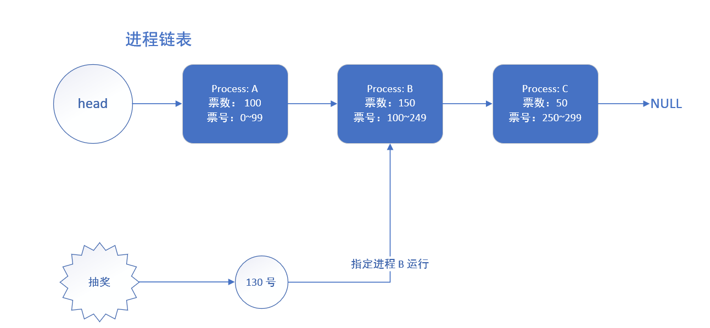

这篇文章主要想介绍下彩票调度（个人觉得这个算法非常有意思~ ），还有随机算法相对传统算法的一点优势，毕竟现在绝大多数算法都是追求确定性，尤其在操作系统，大家都希望一切可控，所以随机算法的出现听起来有些“不合时宜”，但它确实能够解决某些传统算法难以解决的边角问题（算是给自己挖个坑，以后可能会写），也为我们提供了一种新的思路。
以下是正文：
进程调度器今天突然召集大伙，说是要讨论一件重要的事情，问他他还卖关子：“你去了就知道，我现在不告诉你们。”
还没到约定时间，大伙儿就已经来到了内存家，只见进程调度器气定神闲的坐在椅子上，翘着个二郎腿，好不自在。
“调度器老哥，现在人也都来的差不多了，咱们现在就开始吧，早点结束大家伙儿好接着回去干活啊。”
调度器“嗯”了一声，起身走向白板，说：“我向大家先说明一下背景吧，咱们原来的调度算法，比如先来先服务，短进程优先，优先级调度等等，大都是为了优化周转时间和响应时间，效果也还不错。不过这些算法，有些可能会导致饥饿的问题，我想不少进程深有体会。”
tobe 注：关于这几种调度算法，可以看这篇文章——https://www.cnblogs.com/tobe98/p/11604483.html
饥饿问题确实困扰操作系统很长时间了，虽然饥饿不如死锁那么有破坏力，但还是影响到了进程家庭内部的和谐。听调度器的意思，他是能解决这个问题？
几个低优先级进程开始小声议论起来，像他们这种优先级别低的，总会因为高优先级进程“插队”而得不到 CPU 资源，心里早就憋着一口气呢。忍不住问调度器：“现在是有什么好办法了吗？我们可受够饥饿的生活了！”
调度器得意的说：“那当然，不然我今天把你们大伙叫过来干什么？我最近想到一个好点子，咱们可以调整一下调度目标，改成确保每个任务获得一定比例的 CPU 时间，这样只要我们提前约定好份额，每个人最后都可以享受到应有的待遇，不可能出现某一进程独占的现象！听起来是不是很公平？我打算把这类算法叫「比例份额调度」或者「公平份额调度」。”
系统进程提出了质疑：“公平？你别说大话了，这个目标咱们又不是没有追求过，也就时间片轮转算法勉强达到了我们的要求，可一旦再划分出优先级（指的是多级优先队列调度），就可能会造成进程饥饿，追求公平可不是那么简单的！”
“你先听我说嘛，绝对的公平确实很难达到，我们现在退而求其次，追求一个相对公平——就是说短时间里可能会有些许不公平，但从长期来看，大家在 CPU 上运行的时间所占比例就是一开始约定好的。”
“听起来很有道理，但是你打算怎么实现？”
“嘿嘿，我给这个方法取名叫「彩票调度」，咱们一开始的时候给每个进程发彩票——优先级越高，发的彩票越多，然后每隔一段时间（一个时间片），举行一次彩票抽奖，抽出来的号是谁的，谁就能运行~”
“哈哈哈哈，我还以为是什么厉害的算法呢”，一时间，大家都笑了出来，整个内存里充满了快活的气息。调度器的脸唰的一下就红了。
操作系统吐槽道：“调度器，你是不是跟那帮人类学坏了？在我们这儿还搞什么彩票，下一步是不是打算骗大家的时间片？再这么搞下去，小心我把你职位撤了啊！”
调度器赶紧为自己解释：”诶，我可是经过深思熟虑才想出来的，你们别误会啊！打个比方吧，假如有两个进程 A 和 B，我想让 A 占用 80% 的 CPU 时间，B 占用 20% 的 CPU 时间，我就给 A 发80 张彩票，给 B 发 20 张彩票。这样，每次抽奖的时候，A 就有 80% 的概率占用 CPU，从数学期望上讲，1 秒钟之内，A 能运行 800ms。我是打算利用随机性来达到按比例分配的目标的，可从没打算骗大家。“
操作系统看起来有点认可这个算法了，他点点头：“有点意思，你接着说下去。”
调度器松了一口气，继续说：“我觉得这种算法有个很好的地方——即使某进程只有一张彩票，经过多轮迭代，他总会获得 CPU 的使用权。所以饥饿的问题就能解决了~”
PS：可别跟现实的彩票等价啊，现实彩票中奖率低的吓人。。。没法比的（不信你自己算一算）。
那几个经常饥饿的进程听了，两眼放光，仿佛抓到了希望。
"别急，还没完呢！你们想想，咱们用过的「最短响应比优先」算法，还得记录每个进程在就绪队列等待了多长时间，多麻烦！我这个「彩票调度」，不需要记录任何状态，拿来就用，特别的轻量，而且这种随机方法很快，只要生成一个随机数，就能快速做出决策。为了向你们展示，我还特意写了段伪代码。"

//当进入时钟中断时运行
//counter 用来数哪个进程拿到了 winner 彩票
int counter = 0;
//选出胜者，其中 totalticks 是彩票总数
int winner = randint(0, totaltickets);
//指针，指向队列里的进程
job_t *current_job = head;
while(current_job != null)
{
counter = counter + current_job->ticket;
if (counter > winner)//说明当前进程拿到了 winner 彩票
break;
current_job = current_job->next;
}
//切换至 current 指向的进程操作系统看完了代码，赞叹道：“好家伙，确实是个简洁的调度算法，简洁的都有点儿不可思议了。不过你这个代码只解决了调度问题，最开始的彩票分配问题你打算怎么解决？”
调度器面露难色：“我这几天也在想这个问题，不过暂时没有想到好的解决方案，所以说要靠试运行来摸索嘛，如果找到好的分配方法，就可以长期运行下去了。”
“确实，我也觉得这个方法有的一试，咱们明天就按这个调度算法来，看看效果能不能比上现有的算法！”
调度器高兴地叫出来：“好，太好了，我马上就去准备！”
实际上彩票调度并没有在 CPU 调度程序里广泛使用，一个原因是不能很好的适合 I/O（有论文研究过这个问题），另一个原因就是文中所提到的，票数分配问题没有确定的解决方式，比如你新打开了一个浏览器进程，那该给他分配多少票？票数少了，响应跟不上，票数多了，又会浪费 CPU 时间。
与此相比，常见的通用调度程序，比如多级优先队列，就做的很好，因此现在得到了广泛的应用。
但不代表这种思想就没有用了，在某些容易确定份额比例的领域里，比例份额调度程序就更有用——比如在虚拟数据中心，你可能希望 1/4 的 CPU 时间给 Windows 虚拟机，剩下的时间给 Linux 虚拟机，这时候靠彩票调度就很方便了。
所以彩票调度机制还是有一定应用价值的，说不定你以后在哪里就用上了呢？
希望你在看完我的文章之后有所收获，期待你的赞和转发！